| (Computer-Aided Qualitative Data Analysis System) |
| “The present case study aims to investigate the
strategies that Kazakhstani university English
language teachers use to cope with heterogeneous
students in their classroom. To this end, two university English teachers in one of the higher institutions in Kazakhstan were observed during their teaching sessions and interviewed in order to identify the reasons why they used particular teaching strategies to deal with heterogeneous students. “ We are dealing with two interview transcripts. Can also imagine some initial codes: strategies; heterogenous students; reasons. Maybe also: classroom. |
| Lots of links & resources @ the
Library: https://guides.library.illinois.edu/qualitative/home |
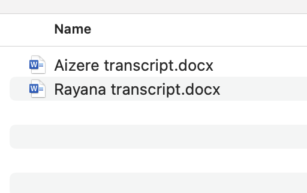 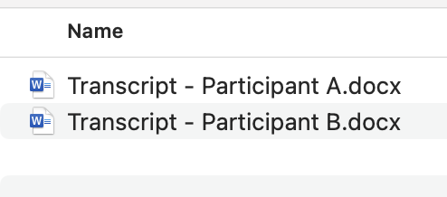 |
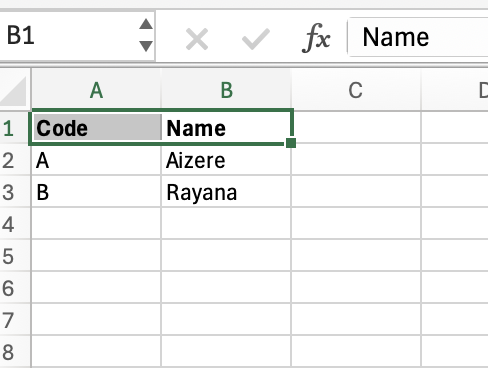 |
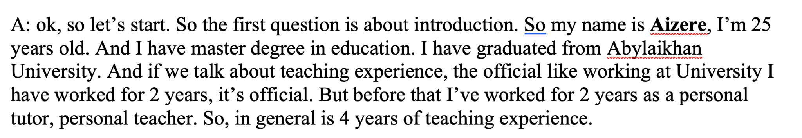 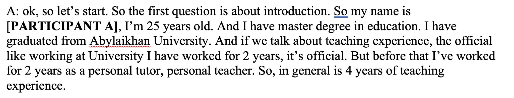 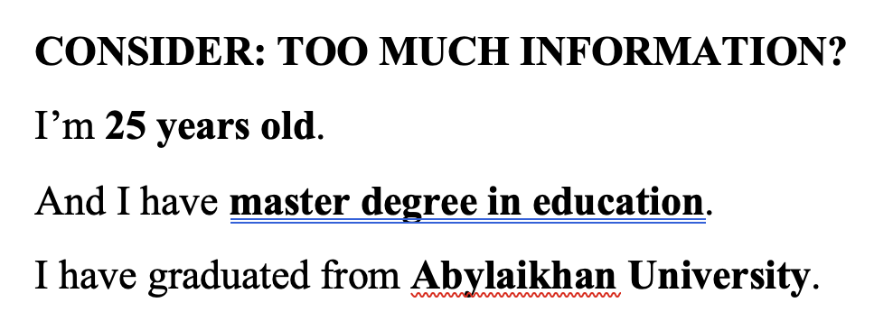 |
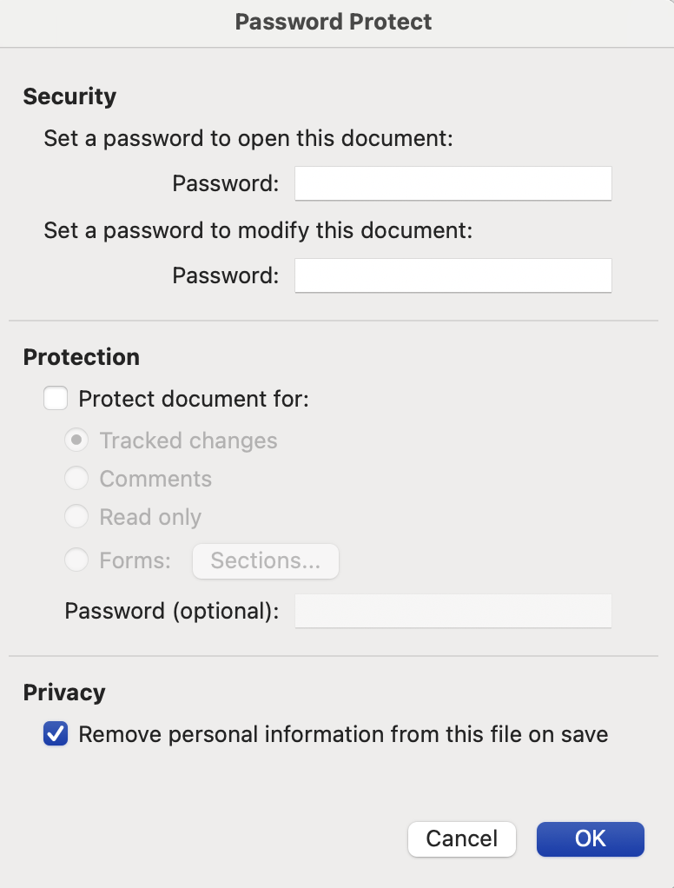 |
| familiarising yourself with your data Search for ‘latent or semantic themes’ ‘Take notes’ or mark ‘ideas for coding’ ‘Transcribing verbal data’ generating initial codes ‘writing notes’, highlighting text (different colours = different themes / codes) searching for themes Analyse codes Tables, mind-maps, ‘theme piles’ reviewing themes Develop & refine candidate themes Data within one theme should be ‘homogenous’; data from different themes should be ‘heterogenous’ Refine (i) by document and (ii) across the whole corpus defining and naming themes producing the report |
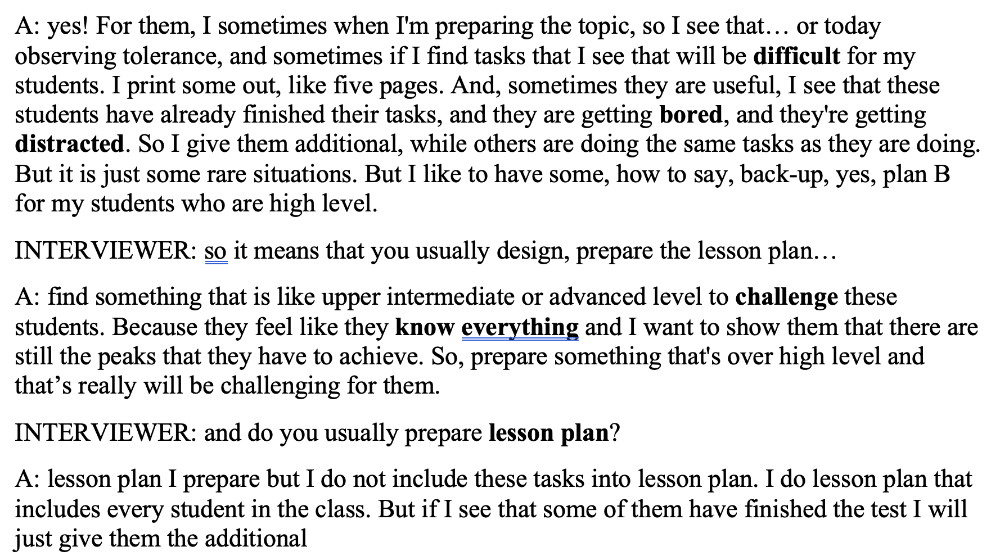 |
Some key terms? “Difficult” “Lesson plan” “Bored”, “Distracted”, “Know everything” “Challenge” Draft** Themes and Codes Lesson plan Task Difficulty Common Difficult / Challenging Student State** Arrogance Boredom Distraction |
| Can codes be extracted? We can test this out… |
| Commercial vs Open
Source? Manual vs Automated Coding? Dedicated Tool vs General-purpose Product? QDA (Qualitative Data Analysis) is a niche product – not used outside of academia (though has applications in marketing – see DoveTail) See Week 3 – encourage use of AI, but with human checking |
Also: remember why we want to do coding. Many
studies assume the following is acceptable as a methodology: “We apply thematic analysis (Braun & Clarke 2006) to transcripts of interviews / focus groups” But why? When will other approaches work: Read & highlight the text for meaningful responses to questions Word frequency analysis / word clouds / other NLPs techniques (using Python & ChatGPT - week 3) |
| Sometimes “coding” is a fancy way to lose meaning
in your data. Make sure you know why thematic analysis
is right If data is small (1-2 interviews) – maybe simply read & comment? If data is large (100s+ of documents) – will thematic analysis scale? Need algorithmic support, alternate techniques Common arguments about “how many” interviews / surveys – determined by technology & research time – not necessarily epistemological concerns (validity, reliability) |
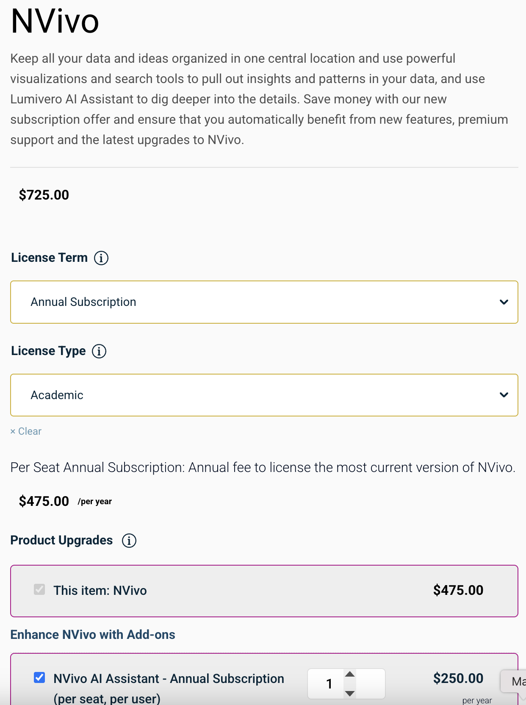
Nvivo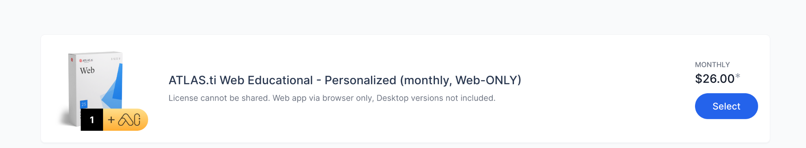 |
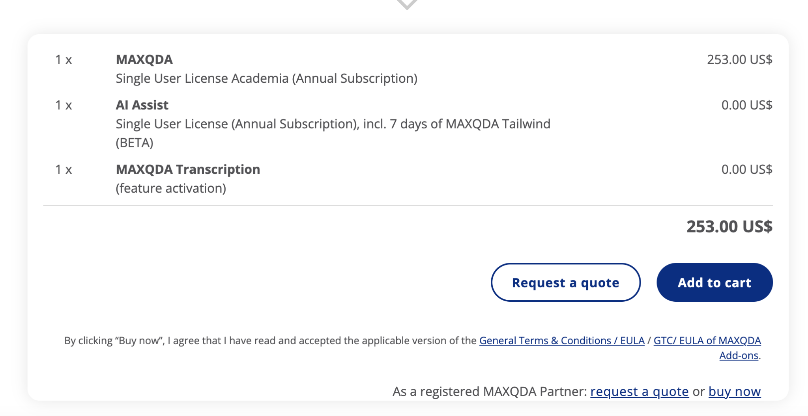 |
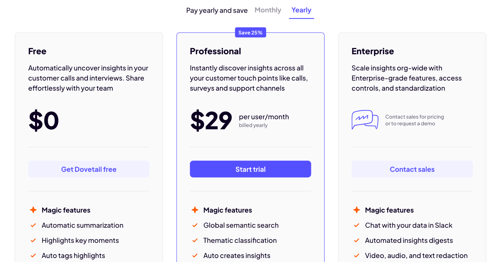 |
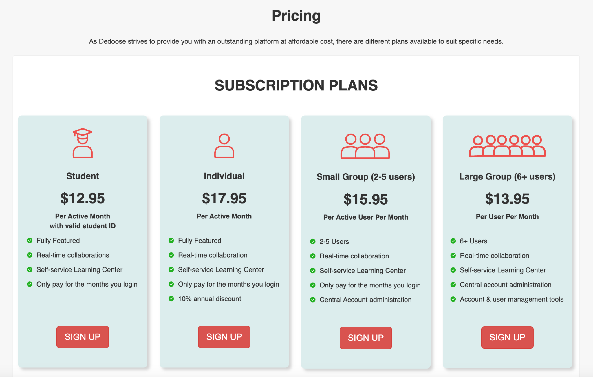
Dedoose| +1 month free trial Collaborative – very useful when working in teams |
| Not really? Products like QualCoder, Taguette - no experience with them, but seem individual hobby projects Would encourage trying them out Require more technical expertise? Less fully featured? Not like quant data analysis: R, Python both hugely popular, supported, etc AI: definitely an option (see Week 3). Many QDA products include an “AI” option at additional cost (likely a “wrapper” around ChatGPT / Claude). |
| Fine for small projects Requires discipline in colour coding / highlighting Hard to extract metrics: common themes / codes Not good for collaboration: hard to check inter-rater reliability (do Raigul and Aigerim code data in the same way?) |
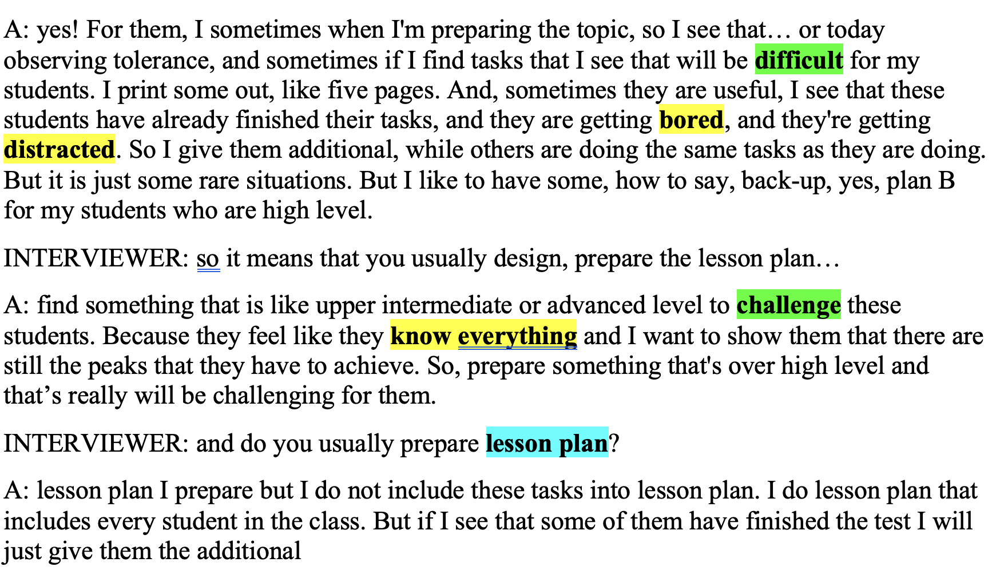 |
| Benefits: Cheap, simple, collaborative Data is based in the cloud – not as private as desktop-based NOT an endorsement. All QDA software is quite complex, buggy… Not an area of “high” quality software – 1990/2000s era with incremental updates. Expect to spend time re-doing some steps, backing up data, learning tutorials… |
Very quick overview – for more information: Download: https://www.dedoose.com/resources/articledetail/dedoose-desktop-app Lots of videos, tutorials etc: https://helpdesk.dedoose.com/hc/en-us https://www.dedoose.com/home/resources Explore the Demo Project… |
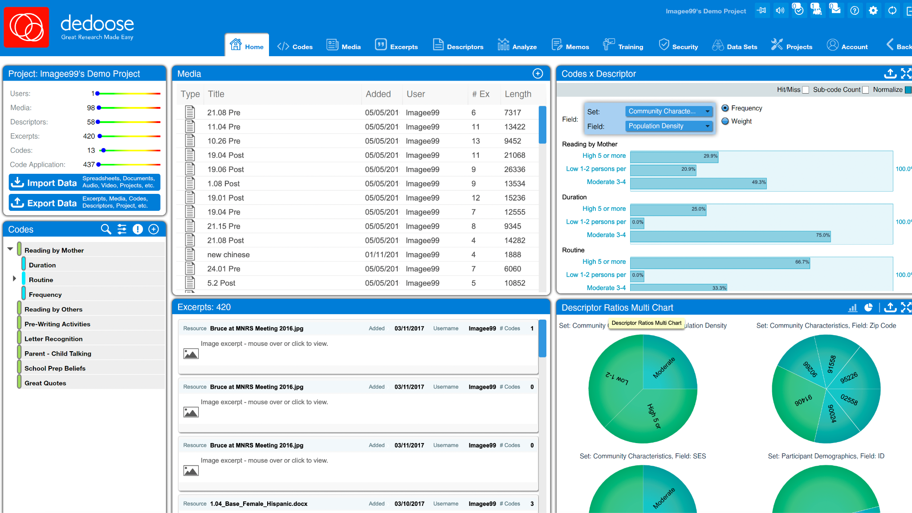
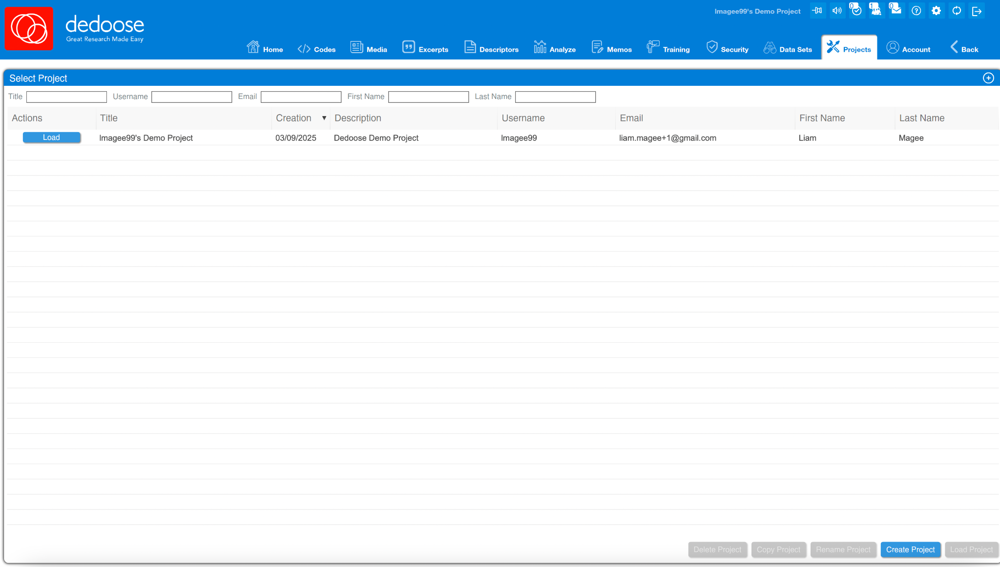
Steps| Sign up online Download and open Dedoose software Login Go to Projects tab Click “Create Project” “Import Data” 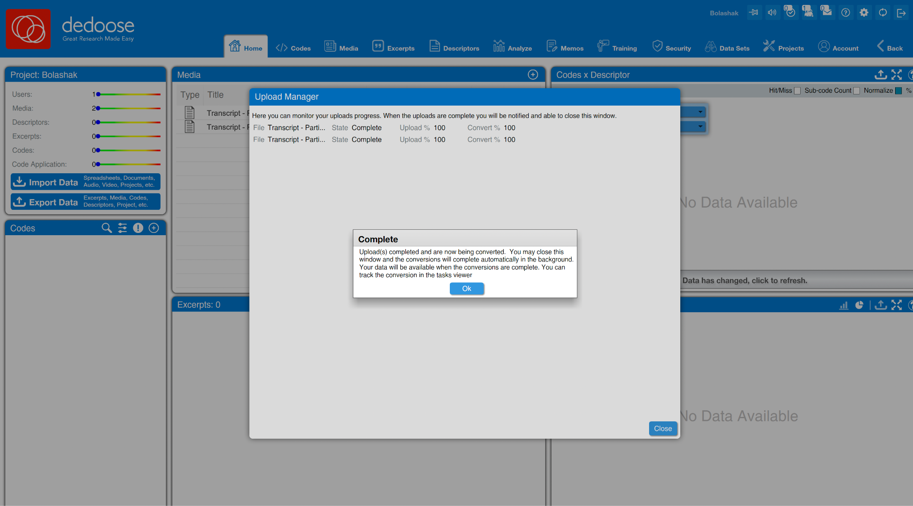 |
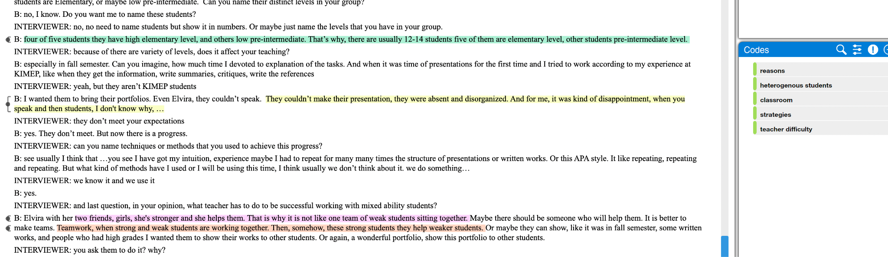
| 7. Add codes: strategies; heterogenous students; reasons;
classroom 8. You have two key concepts: Codes Media (documents) 9. Your job is then to open media, apply codes, add descriptors / fields and then analyze 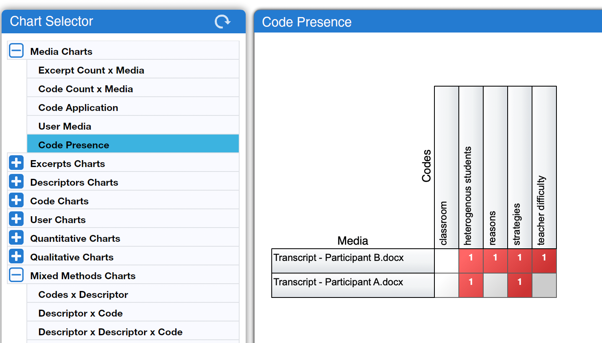 |
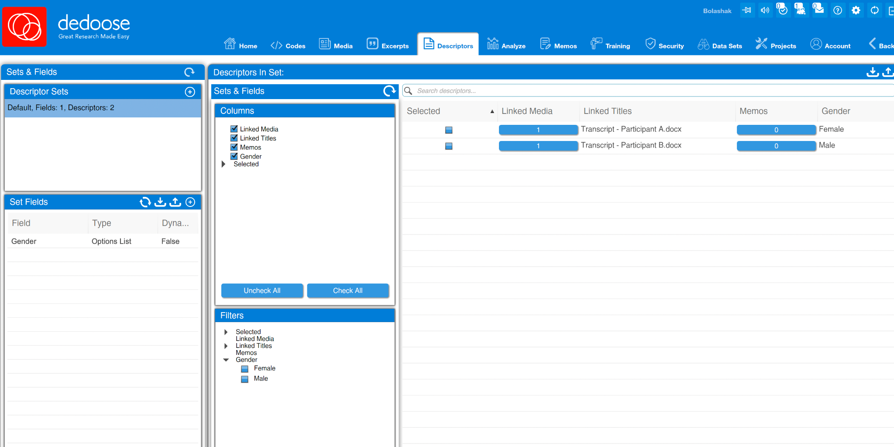
| Interviews by age, gender, other variables Dedoose has concept of descriptors / fields / sets You might want to test: Does the code “strategies” appear more often among women than men participants? |
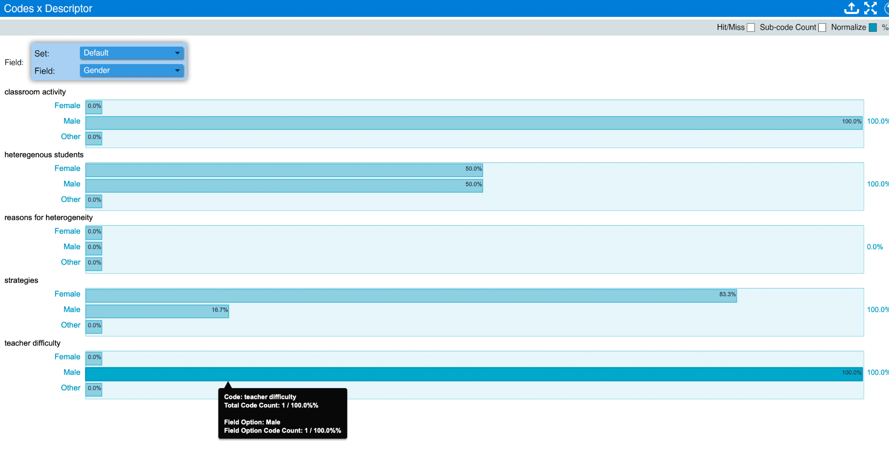 |
| More codes, sub-codes: Different kinds of
strategies, difficulties More fields (primary language – Kazakh, Russian?; age; urban / rural; school level, etc) Add memos – reasons or comments about assignment of codes to media (excerpts) – can help with analysis Explore different analytic combinations Collaboration – examine inter-rater reliability Mixed methods – multimedia, quantitative data etc |
| Convert into textual commentary in a journal article.
Examples: High level summary: “After coding the interview transcripts, we found teachers used a variety of strategies – pairing students, being more permissive of weaker students making errors, offering token rewards (e.g. chocolate bars), challenging high performing students, offering praise – and even singing songs!” Include excerpts as quotes: “One participant (B) stated that pairing was helpful: ‘Then, somehow, these strong students they help weaker students.’” Add** detailed analysis: “Teachers with varied strategies – such as participant B – rarely spoke of difficulties, suggesting that having a repertoire of such strategies was important in managing classrooms with heterogenous students”. Examine differences, possible causes, and potential solutions**: “[DIFFERENCE] Curiously, female teachers seemed to have more strategies for managing heterogenous classrooms than male. [CAUSE] This may be due to male teachers being focussed on elevating higher performing students, and suggests [SOLUTION] more effort needs to be spent on training teachers to focus on overall classroom performance.” |